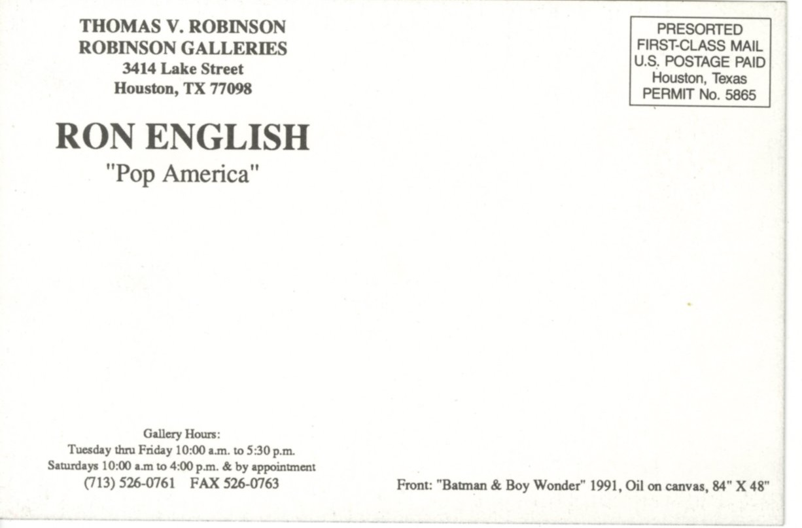

Pop America
Thomas V. Robinson / Robinson Galleries, Houston, 1992.


Documented Works Associated with the Exhibition
The following works are documented in surviving showcard and press material associated with the exhibition; additional works may also have been included.

Captain America
Reproduced in The Houston Post, February 9, 1992

The Ascension of Elvis
Reproduced in an unidentified Houston-area “Picks” press clipping

Givin’ the Dog a Bone
Documented in surviving exhibition material

Horny Senatosaurus II
Advertised in The Houston Post on February 18, 1992 as “Horney Senatosaurus”
Notes
A notice in The Houston Post on Sunday, February 9, 1992, describes Pop America as “an exhibit featuring paintings and photo works by Ron English.”
The surviving exhibition showcard gives the venue as Thomas V. Robinson / Robinson Galleries, 3414 Lake Street, Houston, and identifies the front image as Batman & Boy Wonder, 1991, oil on canvas, 84 × 48 in.
A Houston Post Business Day advertisement dated Tuesday, February 18, 1992 reproduces Horny Senatosaurus II, printed there as “Horney Senatosaurus,” with the caption “’92, Oil, 30" × 24".”
An unidentified “Picks” press clipping reproduces The Ascension of Elvis and notes that Ron English had relocated to New York, that the opening was on Saturday, and that the show remained on view through March 3.
The currently surviving promotional material shows a minor date discrepancy: the unidentified “Picks” clipping and one promotional strip give the exhibition through March 3, while The Houston Post material gives the closing date as March 4.
Documented Press Quotes
- “The worlds most Notorious illegal artist” — Morton Downey Jr.
- “Pushes super realism to new reality tests” — The New York
- “The guy is clever, skilled and energetic, but what the hell do they mean?” — Paul Hester, Spot
- “A cerebral cross-body blow” — Hype Magazine
- “I have no idea whether the artist has an international reputation — but he certainly deserves one.” — Bill Jay, Book of Days
- “Ron English had arrived. Thank God. This man has imagination, balls, humor and skill. I’m a fan and proud of it.” — Austin Chronicle
Sources
- Exhibition showcard for Ron English: “Pop America”, Thomas V. Robinson / Robinson Galleries, Houston, showing the front work as Batman & Boy Wonder, 1991, oil on canvas, 84 × 48 in.
- The Houston Post, Sunday, February 9, 1992, p. H-12, notice for Pop America describing the exhibition as featuring paintings and photo works by Ron English.
- The Houston Post, Tuesday, February 18, 1992, Business Day, p. 14, advertisement for Pop America reproducing Horny Senatosaurus II as “Horney Senatosaurus.”
- Unidentified Houston-area “Picks” press clipping, early February 1992, reproducing The Ascension of Elvis and describing Pop America.
- Unidentified promotional clipping preserving press quotes and exhibition details for Pop America.